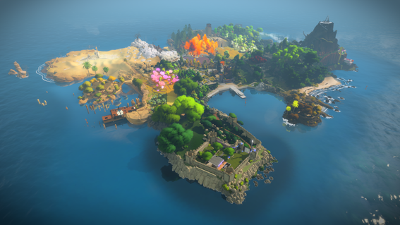

A Terceira é uma das nove ilhas dos Açores, integrante do chamado "Grupo Central". Primitivamente denominada como Ilha de Nosso Senhor Jesus Cristo das Terceiras, foi em tempos o centro administrativo das Ilhas Terceiras, como era designado o arquipélago dos Açores. designação Terceiras aplicava-se a todo o arquipélago do Açores visto ter sido o terceiro arquipélago descoberto no Atlântico (o arquipélago das Canárias era designado de Ilhas Primeiras e o arquipélago da Madeira por Ilhas Segundas, segundo a ordem cronológica de Descoberta). Com o avançar dos anos esta ilha passou a ser conhecida apenas por Ilha Terceira. Ao longo de sua história, a Terceira desempenhou um papel de grande importância no estabelecimento e manutenção do Império Português, devido à sua localização geoestratégica em pleno Atlântico Norte.
